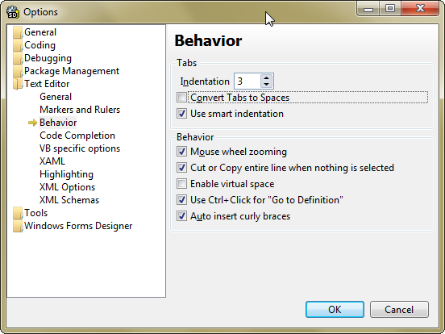

This is the source code for the SugarCube host software and related utilities. You can browse the code using any decent text editor (I recommend Notepad++ personally) but if you want to edit or debug you will need to get SharpDevelop (4.3 or higher). More details on that below.
You need at least version 4 of the .NET framework to build and run the software. Additionally, you will need to grab SharpDevelop, the open source .NET IDE. You can find the latest version here, the mimimum version you will need is 4.3.
Once you have SharpDevelop installed, double click on AStyle.sdaddin to install the AStyle addin. This allows you to automatically format your code, more below.
The code is all formatted identically. Consistent code formatting is important because it reduces noise when doing diffs across code revisions. To make this easier, it is a requirement that everyone who edits this code makes use of the AStyle addin to format their code, and that everyone's formatting options are set identically.
There are two places where you will need to set options. The first is in SharpDevelop itself. Select Tools -> Options fromt he main menu, and then in the options dialog select Text Editor -> Behavior. Set Indentationt o 3 and make sure Convert Tabs to Spaces is unchecked, like so:
The next place you have to set options is in the ASpell addin itself. Select Tools -> Astyle options from the main menu. Set the Coding style to CommandLine and check Indent Namespaces and Use tab char. Then set the command line to --style=java --indent-namespaces --indent=force-tab=3. The dialog should look like this:
Now, whenever you have edited code, press Ctrl-Alt-W to run Astyle before saving.
Generally, I find that the fewer standards the more likely people are to remember to use them. Here are the few that I try to stick to:
Using code templates for commonly repeated code makes for a much easier development time. For details on how to use code templates, see this link. In particular, the following templates are very useful for quickly inserting logging statements
| Template Name | Template Value |
|---|---|
| lnew |
/// <summary>
/// Initalizes our static logger reference with the type name of the class
/// </summary>
private static readonly ILog log = LogManager.GetLogger(typeof(${ClassName}));
|
| ldebug |
if (log.IsDebugEnabled) {
log.Debug(${Selection});
}
${Caret}
|
| linfo |
if (log.IsInfoEnabled) {
log.Info(${Selection});
}
${Caret}
|
| lwarn |
if (log.IsWarnEnabled) {
log.Warn(${Selection});
}
${Caret}
|
| lerror |
if (log.IsErrorEnabled) {
log.Error(${Selection});
}
${Caret}
|
| lfatal |
if (log.IsFatalEnabled) {
log.Fatal(${Selection});
}
${Caret}
|
There are five projects in the solution and two folders of supporting files. These are discussed below:
Any image or icon used by more than one of the projects should go here.
All of our shared third-party libraries go here.
The hears of the software, this is the shared API used across projects that covers interacting with the cube, uploading images, etc.
This simple utility checks that we are speaking the same language as the cube
The first MVP release of the host software for offsite real-customer testing
This is where new features are developed and tried out. It exposes the guts of our API for testing and experimentation.
A background uploader for scans, utilizing SFTP.